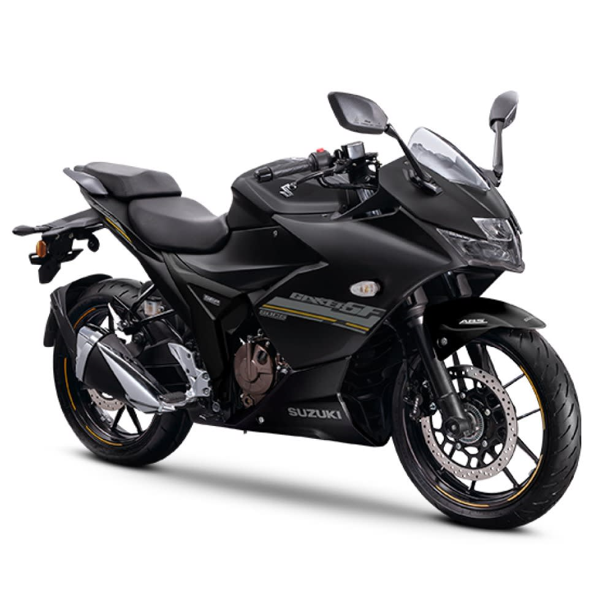

Las motos deportivas están diseñadas para ofrecer el máximo rendimiento, velocidad y agilidad. Son vehículos de alto nivel tecnológico con motores potentes, chasis livianos y a erodinámica avanzada, ideales para los amantes de la adrenalina y la conducción a altas revoluciones. Su postura de manejo inclinada hacia adelante permite un mayor control en curvas y una experiencia intensa sobre el asfalto. Ya sea en carretera o en pista, las motos deportivas destacan por su diseño agresivo, frenos de alto rendimiento y sistemas de suspensión avanzados..
